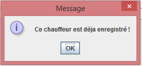
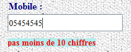
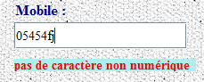
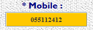
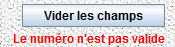
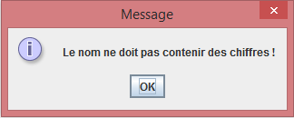
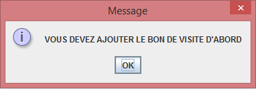
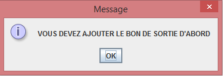
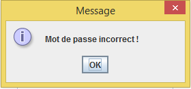
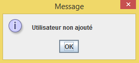

Figure1: Ce type de message s'affiche dans
l'ongle Paramètres. Dans ce cas c'est pas la peine
d'ajouter le chauffeur, il est déja ajouté (la mème
chose pour les messages semblables).

Figure2: Ce
type de message s'affiche dans l'ongle Paramètres. Dans ce cas il faut
que le numéro
de téléphone ait au moins 10 chiffres sinon toutes les fonctionnalités
restent inactives
(la mème chose pour les messages
semblables).

Figure3: Ce type de
message s'affiche dans l'ongle Paramètres. Dans ce cas il faut enlever
tous les caractères
non numériques du numéro de téléphone
sinon toutes les fonctionnalités restent inactives
(la mème chose pour les messages
semblables).
 
Figure4: Ce type de
message s'affiche dans l'ongle Clients. Dans ce cas il faut que le
numéro
de téléphone ait au moins 10 chiffres (pas de caractère non
numérique) sinon toutes
les fonctionnalités
restent inactives.

Figure5: Ce type de
message s'affiche dans l'ongle Paramètres. Dans ce cas il faut enlever
tous les caractères
non alphabétiques du nom sinon toutes les fonctionnalités
restent inactives
(la mème chose pour les messages
semblables).

Figure6: Ce type de
message s'affiche dans l'ongle Dossiers. Dans ce cas il faut d'abord
générer le bon de visite
du dossier avant de pouvoir générer son bon de sortie et
éventuellement sa facture.

Figure7: Ce type de
message s'affiche dans l'ongle Dossiers. Dans ce cas il faut d'abord
générer le bon de sortie
du dossier avant de pouvoir générer sa facture.

Figure8: Ce type de
message s'affiche dans l'ongle Paramètres->Utilisateurs. Dans ce cas
la confirmation du mot de passe
n'est pas valide (les deux
mots de passes ne sont pas égaux).

Figure9: Ce type de
message s'affiche dans l'ongle Paramètres->Utilisateurs. Dans ce cas
l'utilisateur n'a pas était ajouté
car vous n'avez pasdéfini
son mot de passe.